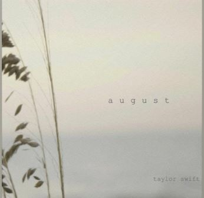

The Folklore Love Triangle

The story behind August
The song August is about a girl people call Augusta and the relationship she had with james that didnt work out.
She sings about how she hoped that her relationship with james would workout and how it didn't.
She also sings about all the fun times they had in the summer break and how she hopes he remembers them.
During the song she comes to realize that James was never hers to love and that
he never loved her the same way she loved him. Yet she still hopes he'll come back to her
and lover her just like she keeps wishing he would.
Lyrics
Salt air, and the rust on your door
I never needed anything more
Whispers of "Are you sure?"
"Never have I ever before"
But I can see us lost in the memory
August slipped away into a moment in time
'Cause it was never mine
And I can see us twisted in bedsheets
August sipped away like a bottle of wine
'Cause you were never mine
Your back beneath the sun
Wishin' I could write my name on it
Will you call when you're back at school?
I remember thinkin' I had you
But I can see us lost in the memory
August slipped away into a moment in time
'Cause it was never mine
And I can see us twisted in bedsheets
August sipped away like a bottle of wine
'Cause you were never mine
Back when we were still changin' for the better
Wanting was enough
For me, it was enough
To live for the hope of it all
Cancel plans just in case you'd call
And say, "Meet me behind the mall"
So much for summer love and saying "us"
'Cause you weren't mine to lose
You weren't mine to lose, no
But I can see us lost in the memory
August slipped away into a moment in time
'Cause it was never mine
And I can see us twisted in bedsheets
August sipped away like a bottle of wine
'Cause you were never mine
'Cause you were never mine, never mine
But do you remember?
Remember when I pulled up and said, "Get in the car"
And then canceled my plans just in case you'd call?
Back when I was livin' for the hope of it all, for the hope of it all
"Meet me behind the mall"
Remember when I pulled up and said, "Get in the car"
And then canceled my plans just in case you'd call?
Back when I was livin' for the hope of it all (for the hope of it all)
For the hope of it all
For the hope of it all
(For the hope of it all)
(For the hope of it all)